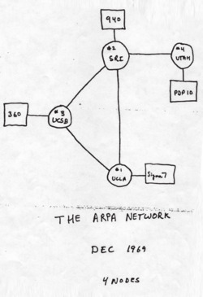

A Internet é uma grande rede mundial que conecta computadores, celulares e outros dispositivos. JáWeb é um dos serviços que funciona através da Internet e permite acessar páginas e conteúdos por meio de navegadores. Portanto, Internet e Web não são a mesma coisa.
A história da Internet começou a partir de projetos de comunicação entre computadores. Um dos principais marcos foi a ARPANET, criada no final da década de 1960.

Durante as décadas seguintes, diferentes redes e protocolos foram desenvolvidos. Um dos principais conjuntos de protocolos foi o TCP/IP, que permitiu a comunicação entre diferentes redes.
Em 1989, Tim Berners-Lee propôs a World Wide Web. A Web utilizou tecnologias como HTML, HTTP e URLs para permitir o acesso a documentos através de links.
A expansão da Internet permitiu o desenvolvimento de diversos serviços digitais e transformou a maneira como as pessoas compartilham informações.
| Ano | Acontecimento |
|---|---|
| 1969 | Início da ARPANET |
| 1983 | Uso do TCP/IP |
| 1989 | Proposta da World Wide Web |
| 1991 | Web disponibilizada publicamente |
| Fonte: informações históricas sobre Internet e Web | |
A Web utiliza diferentes tecnologias. Por exemplo: H2O representa água e 210 representa uma potência.